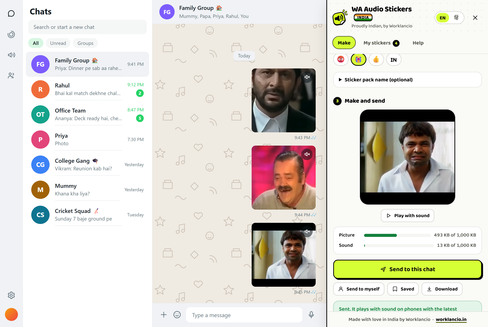

Home / Guide
How to send audio stickers on WhatsApp
Short answer: install the free WA Audio Stickers India extension in Chrome, Edge or Brave, open WhatsApp Web, click the lime tab, pick a clip or record your voice, press Make sticker and then Send to this chat. Your friend taps the sticker and hears the sound. It takes about 2 minutes the first time and 10 seconds after that.
What is a WhatsApp audio sticker?
An audio sticker, also called a sound sticker, is an animated WhatsApp sticker that plays a short sound when someone taps it. It is made of two parts: a small animated picture and a short sound clip, sent together as one sticker. WhatsApp shows a little speaker badge on it, so people know it has sound.
What you need
- A computer with Chrome, Edge or Brave (version 116 or newer).
- WhatsApp Web open and signed in at web.whatsapp.com.
- A clip: any video, GIF, photo or audio file. Or just your voice.
Step by step
- Download the extension. Get the free zip from the GitHub Releases page and unzip it.
- Load it in your browser. Open
chrome://extensions(oredge://extensions,brave://extensions), turn on Developer mode and click Load unpacked. Pick the unzipped folder. - Open WhatsApp Web. Go to web.whatsapp.com, open the chat you want, and click the lime tab on the right edge (or press Alt + Shift + S).
- Pick or record a clip. Drop a video, GIF, photo or audio file. No clip? Press Record voice or Record video.
- Cut and style. Keep the best part (up to 15 seconds), set the speed, volume and an optional caption in Hindi, English or Hinglish.
- Make and send. Press Make sticker, then Send to this chat. Done.

Tips for the best sound stickers
- Keep it short. 2 to 5 seconds looks sharpest, because WhatsApp limits each sticker to about 1 MB.
- Pick the punchline. The funniest moment of a meme clip works better than the whole scene.
- Turn on "Make it louder" for quiet clips, and "Soft fade" to remove clicks at the start and end.
- Save favourites to My stickers, so you can resend them in one click.
- Send to myself first, then forward from your phone to keep it in your sticker tray.
Common problems
- Friend sees "message not supported": they need to update WhatsApp.
- No lime tab: reload WhatsApp Web once after installing.
- "Too busy to fit 1 MB": cut a shorter part.
Is it safe?
Yes. The extension runs fully on your computer, asks only for storage and web.whatsapp.com, and has no server or tracking. It sends only when you click, one sticker at a time. It is an unofficial tool, not made by or linked to WhatsApp or Meta, so please use it kindly and never for spam.